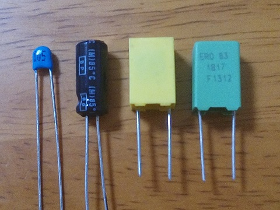
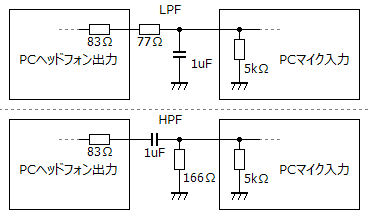
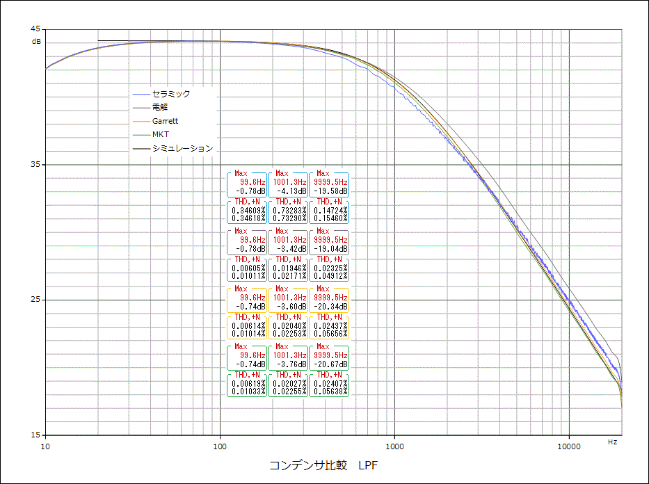
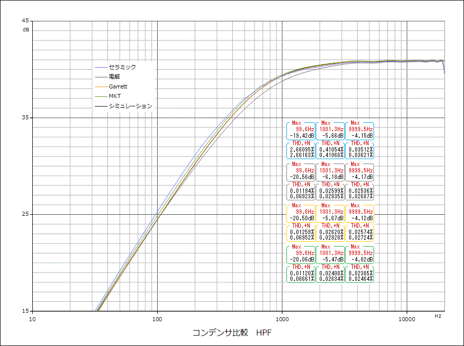

コンデンサで音は変わるのか LPF・HPF編
2017年05月31日 カテゴリー：○○で音は変わるのか
※他の測定でわかった通り、歪率や周波数特性の測定はあまり意味がない気がしますが、失敗例として記事にしていこうと思います。音の変化には歪率や周波数特性以外の何らかの特性が関係していて、それは結局自分の耳で確かめるしかないのだろうと思います。
ローパスフィルタ（LPF）、ハイパスフィルタ（HPF）回路でコンデンサの比較を行いました。コンデンサは以下の4種類です。

・Supertech Electronic 積層セラミックコンデンサ 実測値0.95μF 50V 温度特性：Y5V（1個10円）
・日本ケミコン SME 両極性アルミ電解コンデンサ 実測値1.03μF 50V 85℃（1個21円）
・Garrettcap GBQ メタライズドポリエステルフィルムコンデンサ 実測値1.0μF 100V（1個50円）
・Vishay/Roederstein MKT1817 メタライズドポリエステルフィルムコンデンサ 実測値1.03μF 63V（1個200円）
PCの入出力インピーダンスの影響を受けますので、回路は下図のようになります。カットオフ周波数が1kHzぐらいになるようにしました。PCの出力は約1Vrmsです。また、理想的なコンデンサでのLTspiceシミュレーションも行いました。

▽LPF結果

▽HPF結果

Garrettcapとシミュレーションとの周波数特性が全く重なりました。MKTはわずかにズレていますが、静電容量の違いのためだと思います。
積セラはやはり歪率が悪くなっていますが、周波数特性自体はそんなに問題ない感じです。高域がギザギザになっているのは、歪み成分のせいだと思います。
電解コンデンサも歪率が悪くなるのかと思っていましたが、大丈夫なようです（測定限界）。周波数特性はフィルムコンデンサと1dBぐらいズレていて、若干違った特性のように見えます。ただ電解コンデンサは普通のテスターだと容量測定誤差が大きくなるらしいので、測定値があまりあてにならないようです。